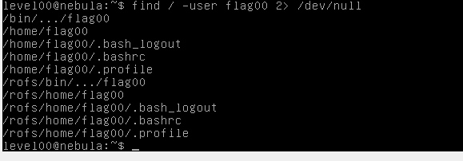
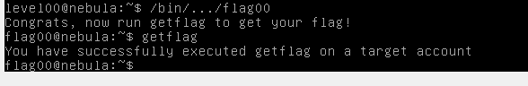

Neste desafio temos de encontrar um ficheiro com o setuid que basicamento o que faz é que nos permite que executemos um ficheiro com permissoes de outro utilizador. Ele diz-nos que é o utilizador flag00.
Para encontrarmos esse ficheiro podemos usar o comando
find com o argumento
-user para dizermos a quem pertence o ficheiro e redirecionamos os que deiam erros como "Permission Denied" para o lixo e para isso fazemos
2> /dev/null

E vemos dois ficheiros que estão na pasta
/bin que normalmente serve para executáveis ou binários.
E ao executarmos BOOM ! Temos o utilizador flag00 ez privesc.
